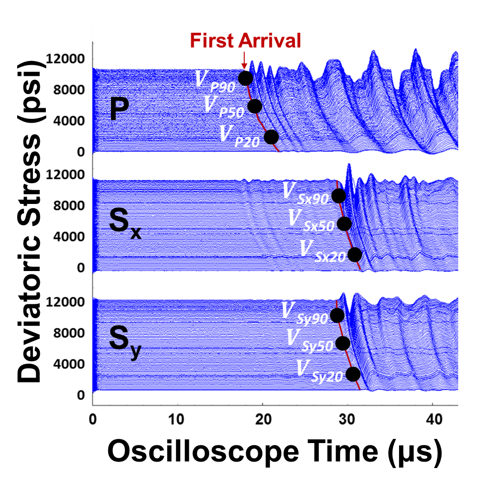

Subsections
Download the file at Berea-Pc=1500psi.zip.
This file contains information of a triaxial test performed on a Berea Sandstone sample “Berea-Pc=1500psi.dat” and recorded ultrasonic waves (*.TRC files).
The specimen length, diameter, and weight are given in lines 37, 40, and 43 respectively of the .dat file.
Stresses (SigD: Deviatoric stress, Sig1: Axial total stress), pressure (Pc: confining pressure and Pu: pore pressure), and deformations (Ex: Axial deformation, Eya: radial strain at 0 , Eyb: radial strain at 90) were logged as a function of time and show up starting at line 88.
The last column tells you at what specific time ultrasonic P-wave and S-wave waveforms were recorded and the file name (*.TRC files).
The TRC files have two columns: (1) Oscilloscope time [10
, Eyb: radial strain at 90) were logged as a function of time and show up starting at line 88.
The last column tells you at what specific time ultrasonic P-wave and S-wave waveforms were recorded and the file name (*.TRC files).
The TRC files have two columns: (1) Oscilloscope time [10 s] and (2) Voltage [V].
s] and (2) Voltage [V].
- Plot confining stress and deviatoric stress as a function of time. Plot the stress path in a
 space. What kind of experiment is this?
space. What kind of experiment is this?
- Plot the axial strain, average radial strain, and volumetric strain as a function of the deviatoric stress (this latter in the y-axis – all plots together). When you do these plots, “zero” the strains to plot just changes respect to the beginning of the deviatoric loading. All strain curves should start from the axes origin. What does volumetric strain show?
- Select at least five points from the deviatoric loading part (between 0% and 50% of peak deviatoric stress) and:
- Calculate static Young modulus and Poisson ratio assuming linear elasticity and an isotropic homogeneous material. Plot as a function of deviatoric stress.
- Calculate compression and shear wave velocities from travel times picked from the TRC files (see figure below). The travel times should be corrected by the endcap travel times (subtract 4.8 s from P-wave arrival times and 6.1 s from Sy-wave arrival times).
- Calculate dynamic Young modulus and Poisson ratio assuming linear elasticity and an isotropic homogeneous material. Plot as a function of deviatoric stress.
- Plot the static Young modulus as a function of dynamic Young modulus. Is there a relationship between those two? What ratio
 would you recommend for this rock?
would you recommend for this rock?
- Bonus: How does porosity change with deviatoric loading? How would permeability change with deviatoric loading.
Figure 8.1:
Example waveforms plotted with increasing deviatoric stress.
 |